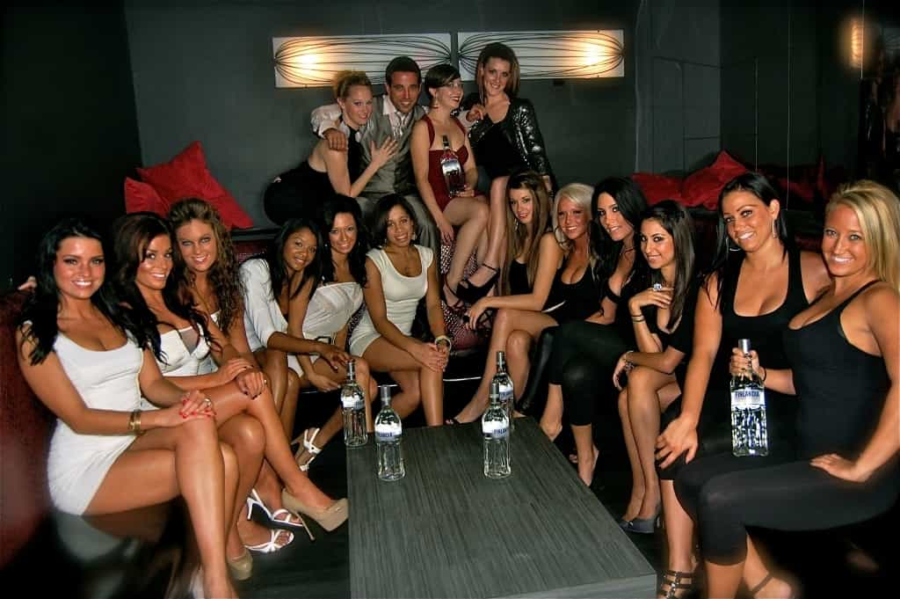

Arlo Dash is a nomadic writer currently enjoying the spoils that life in Eastern Europe has to offer.


For pickup artists, the nightclub is often times the most commonly used venue in their endeavors. In nearly every nightclub worldwide, you will find a DJ whose job it is to create a musical atmosphere conducive to partying. Being both a longtime Roosh supporter, as well as a DJ who has been actively playing for nearly a decade, I want to share my experiences in the nightlife scene.
I have traveled to multiple continents to DJ, have spent time on tour, and shared the stage with 30+ of today’s biggest names in EDM. As a result, I have spent enough time in the game to have a series of profound, eye opening experiences that shed light on many topics related to the manosphere, beginning with the true nature of women.
DJs are typically placed above the crowd to give a strategic vantage point when analyzing how an audience is reacting to their selections. As a DJ, you see more of what goes on in the club than any other staff member or patron. At first, I planned to describe this scenario as: “true nature of women reveals itself to you,” but I realized that was far too benign. Instead, what actually occurs is the true nature of women hits you in the chest like a fucking 9mm.
When you spin music for a nightclub, it is your job to “read the crowd.” You are constantly watching, analyzing, perceiving, and emphasizing with the club patrons to deliver the best possible experience and make their night one to remember. I’m guessing you can see where this is going.
I have seen hundreds of women commit vile acts in nightclubs. It is as if they believe that dim lighting and four vodka cranberries propels them to a “consequence free zone.” The saddest part is that they are often correct.
I once watched a women whose boyfriend went outside to smoke get gamed into giving another a guy a blowjob in the bathroom. She finished him off in time to french kiss her boyfriend when he came back in.
I worked for a club owner who loved fucking women in relationships, often times the wives or girlfriends of his top bottle service clients. He would give these women a free table, a bottle or two, and “disappear in the back” with one of them for an hour. He’d come to the booth at the end of the night and brag about how he had anal sex with them, make them go ass to mouth, and bust loads in them before they’d get picked up by their husbands or boyfriends. Never, ever trust club owners.
One time, I saw him go in the back with a bottle service girl. Her boyfriend showed up looking for her, and the bartenders played it off and gave him free drinks while he waited for his girlfriend to emerge from getting fucked by her boss. She came back acting like nothing had happened. Yes, this is my work environment, though I eventually quit playing at that club.

Before I played one night, I was chatting up a new girl in an empty VIP section, and I started making out with her. Looking to get some pre-set action, I reached down to her crotch, and made direct contact with her pussy. Confused, I looked down and saw she was wearing crotchless pants despite being dressed to the 9’s in designer clothes otherwise. Her bare pussy was totally exposed in the club. She was so ready to get fucked that she had special pants that let her keep her clothes on while it as happening.
A friend of mine once met two girls at a club I was playing at, took them both back to his place and had a threesome with them. He’s a true to form, old school PUA. He decided to bring them back to the club afterwards, and one of them decided that the threesome was not enough for her.
She went out looking, and found the man she’s now engaged to at that same nightclub. Imagine that, she’s making out with her future husband an hour after somebody else’s dick was in her mouth. Worst of all, I think he eventually found out.
Upon first look, you would have no idea these women act this way. Most of the time, these are good looking, well dressed “career women.” Many of them are wearing wedding rings, or are in long-term relationships. As we already know, women take the shape of the container they are placed in. If you put a woman in an environment where promiscuity and cuckoldry is celebrated, it’s not hard to assume what will inevitably happen.
Lol The DJ hands her a flyer and says then don't come on these nights.Video via facebook.com/changomusic
Posted by DJ Mixes Now on Saturday, February 13, 2016
In addition to observing numerous instances of slut behavior, I’ve been physically attacked by some of these women for not playing their requests. I’m not exaggerating in the slightest. The girl in the above video is actually quite nice compared with what I am used to dealing with.
Try explaining what the term “music policy” means to a girl on birth control and psychiatric medication while piss drunk. I’ve had glasses thrown at me for politely declining a request. I sometimes wonder what would happen if their husbands, employers, or any other strong male figure in their life knew they acted in such an unsettling, disrespectful manor in public.
All things considered, you may be reconsidering your trip to the club this weekend, bringing me to my next point.
This is not an experience that merits spending hundreds of dollars.
Not what you were expecting to hear from a DJ? I know. You could say I’m somewhat jaded. On the converse, you could say I’ve had plenty of time to observe these environments from a neomasculine point of view.
If you’re one of these people who finds themselves spending an exorbitant amount of money on the “clubber lifestyle,” I urge you to question your actions. Low quality, high mileage women aren’t worth such a great investment of your hard earned resources.
Roosh has mentioned the damaging effects of these excessive luxuries in an incredible podcast he recorded recently.
I found it particularly useful when considering my own lifestyle and how it is impacted by these experiences, which brings us to my final point.

This looks as good as it tastes.
Groupie sluts, free alcohol, and nice paychecks are all part of what makes this a great career for myself and my peers. If hedonism is your thing, I cannot suggest being a DJ enough.
I am a full time DJ, meaning I work no other jobs. Other perks of DJ life include traveling to new cities for gigs with all expenses paid, a constant creative outlet, and the ability to network with interesting, creative people.
The DJ lifestyle is reserved for those who work the hardest and remain hungry to continue to improve their skills. If I had any advice to anybody who was considering starting, I would say be prepared to give up everything else in your life, because the level of commitment it takes to be successful is absurd.
If you’re looking to become a DJ just to meet women, go buy one of Roosh’s books instead. It is a far better plan if that is your end goal.
Read more: How To Get Connected In The Club Scene